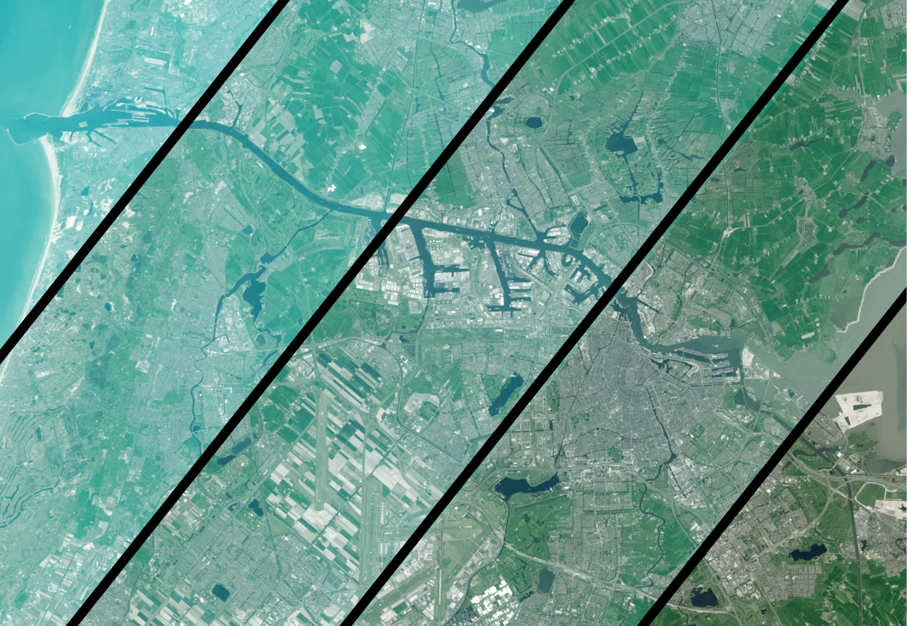
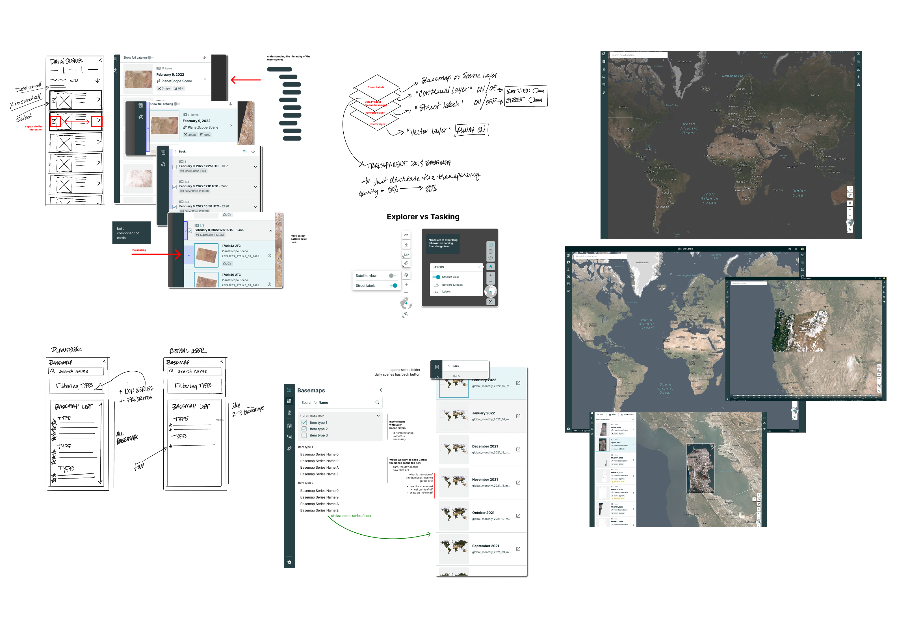
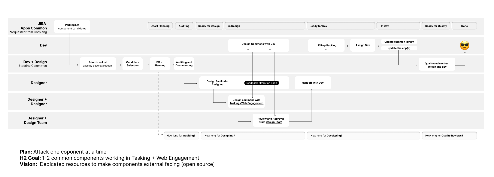
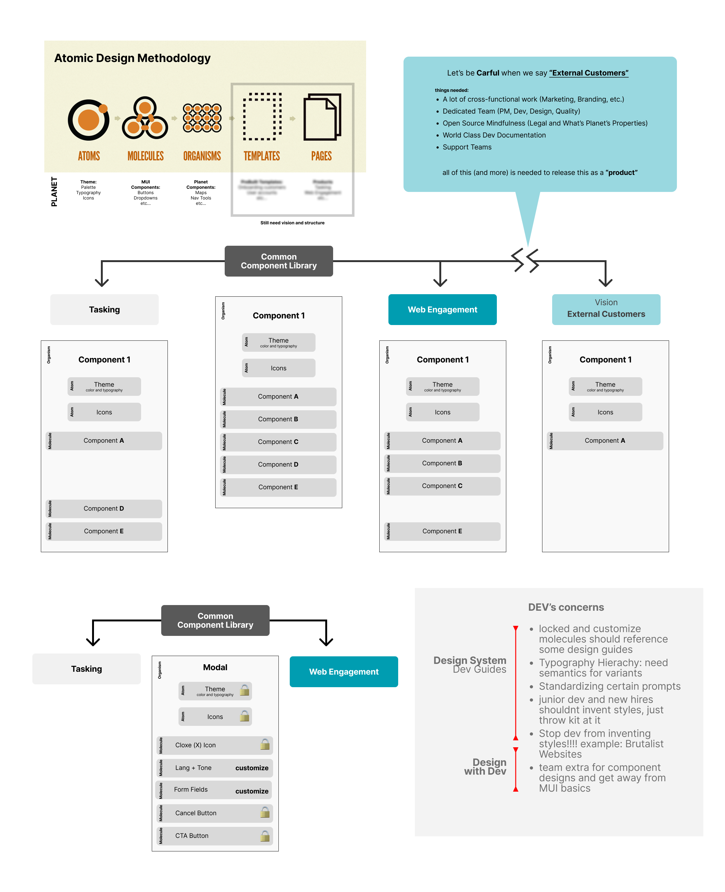
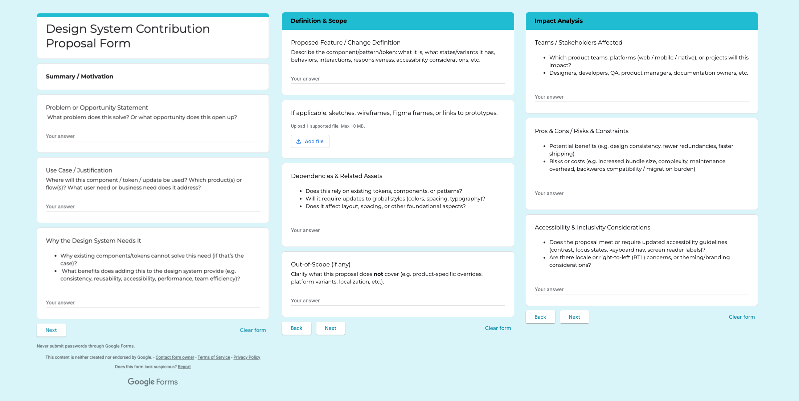

Governance & Contribution
Taming the Design System Wild West
When you’re processing massive amounts of satellite imagery and complex planetary data, you can’t have designers and engineers freelancing their own UI components. Planet was operating at hyper-speed, but our interface was drifting into chaos. I stepped in to design and launch a federated governance initiative—building clear contribution pipelines, strict quality gates (hello, accessibility and token compliance), and a lean stewarding body to keep our design system unified, scalable, and mathematically precise.
Too Many Chefs, Too Many Buttons
Without a clear traffic cop, our design velocity was actually creating technical and visual debt:
The Ad-Hoc Explosion
Teams were constantly cooking up bespoke components and isolated patterns because there was no front door, intake process, or triage system to stop them.
The Maintenance Void
Everyone wanted to build new UI features, but nobody owned the long-term maintenance. System debt was quietly piling up in the corners of our codebase.
Interface Drift
Our core user experiences—like searching for satellite imagery or viewing complex climate analytics—started looking like they were built by completely different companies.
UI and component auditing sessions

Building the Council
This wasn’t a solo dictatorship; it was a diplomatic mission. I stepped up as the Lead Designer for Governance, taking on the role of architect and facilitator.
To ensure the new rules would actually stick, I co-founded a Core Steward Team bridging the gaps between engineering, product management, and design. Together, we mapped out distinct swim lanes so everyone knew exactly who had the final sign-off on tokens, accessibility compliance, and code deployment.
Core Steward Team swim lanes

The Federated Blueprint
Instead of a rigid, slow-moving centralized gatekeeper, we launched a flexible, federated governance model engineered for speed and stability:
The Contribution Engine
We mapped out a bulletproof, step-by-step submission workflow that transformed raw ideas into production-ready system assets.
The Paperwork (The Good Kind)
I designed lightweight triage templates, unambiguous component proposal forms, and strict service level agreements (SLAs) so teams knew exactly when to expect feedback.
Predictable Cadence
We introduced structured quarterly roadmaps and retrospective health checks to ensure the system evolved with the product teams, not against them.
Component structure and rules

Battle-Testing the Pipeline
We didn't just write a manifesto and hope for the best. We treated governance like a product:
The Discovery Phase
I deep-mined our friction points by conducting extensive interviews with 12 cross-functional stakeholders.
The Guinea Pig Run
We picked a single, high-impact, highly requested component and forced it through our experimental workflow to iron out the kinks.
The Deployment
We ran collaborative governance workshops and locked in firm operational SLAs so triage and release cadences felt transparent and reliable.
Contribution proposal form

The Impact Metrics
By treating governance as an accelerator rather than a speed bump, we saw immediate, quantifiable wins across the entire product organization:
Bespoke Chaos Crushed
Reduced ad-hoc component creation by a massive ~70%, drastically shrinking system debt items flagged during retrospectives.
Predictable Shiptembers
Established a reliable, monthly design system release cadence with crystal-clear owners and zero guessing.
High-Quality DNA
Resulted in significantly higher quality cross-team proposals, smoother handoffs, and a near-total elimination of expensive production rollbacks.
Lessons & Next Steps
The Hard Truth
Governance can't live on good vibes alone; it requires completely transparent operational metrics like Time to Triage and Time to Publish to keep teams trusting the process.
The Horizon
The next step is pure optimization—integrating automated checks (like token usage scans, linting, accessibility checks, and visual regression diffs) directly into our contribution pipeline to let the robots do the heavy lifting.